Custom IC Layout
Cadence VirtuosoSelected layout work from an academic IC fabrication project. Work includes CMOS current mirrors, structured device placement, matching techniques, routing and physical verification.
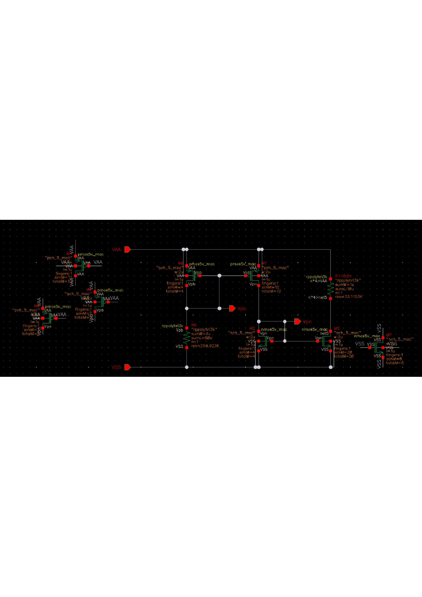
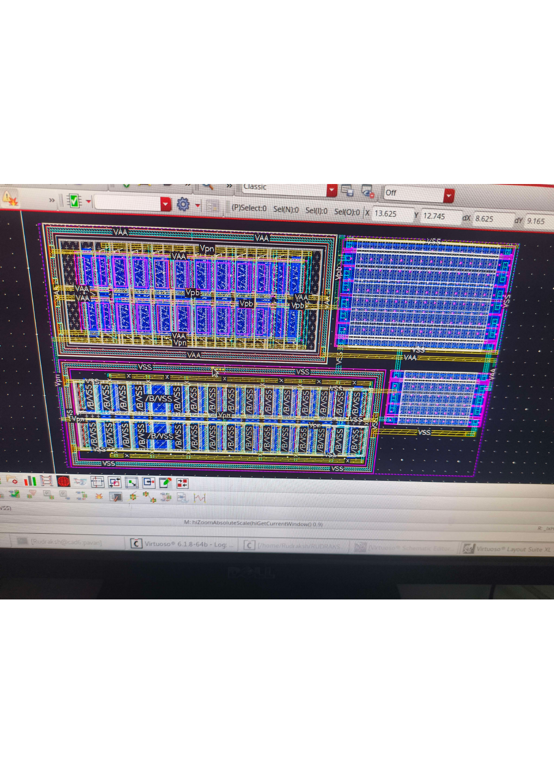
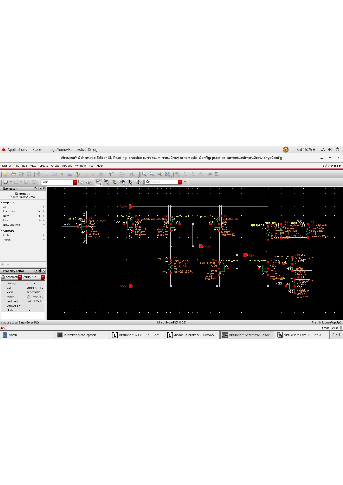
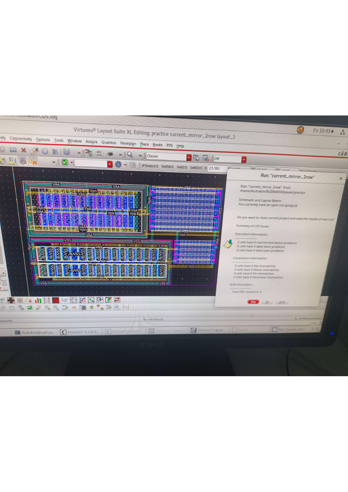
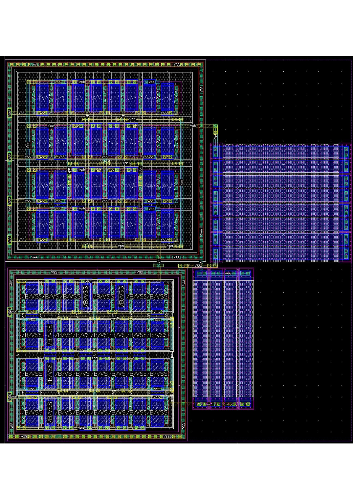
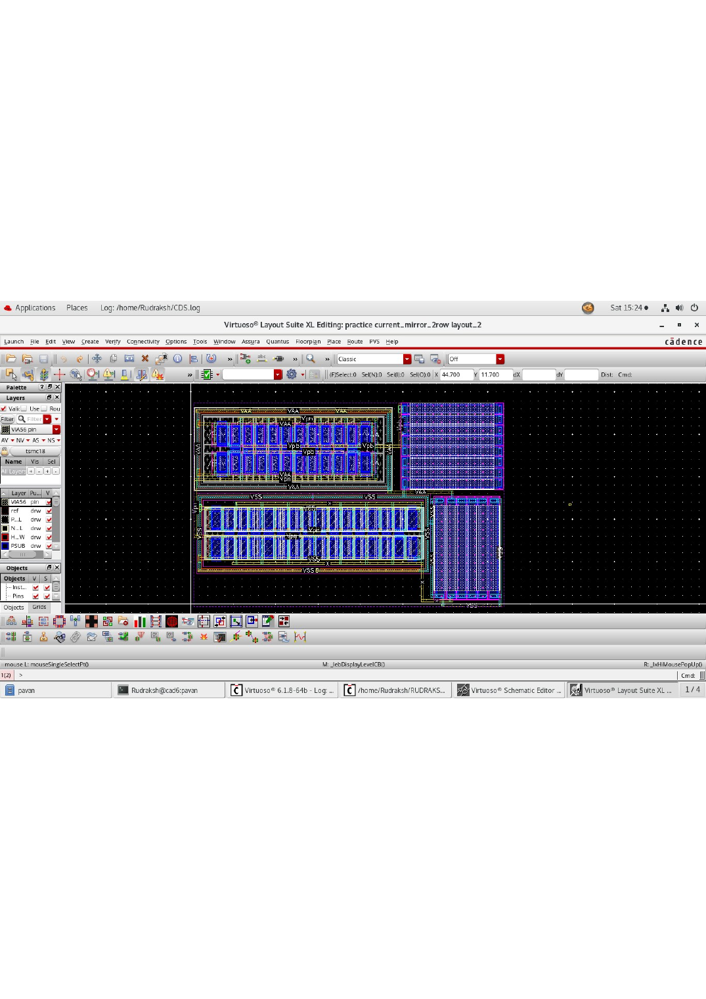
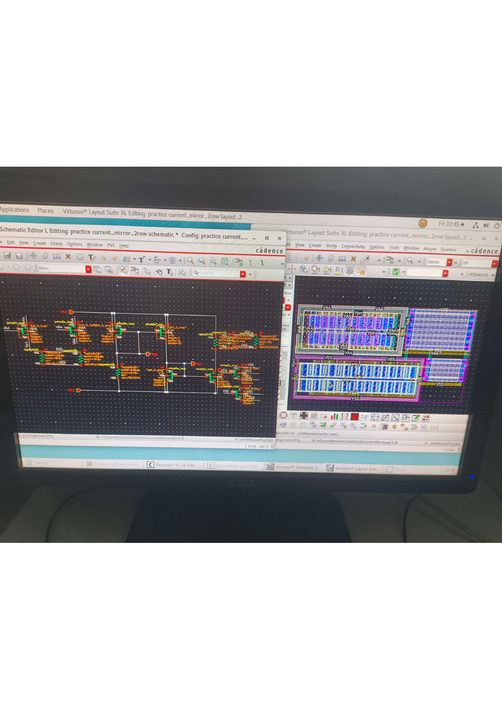
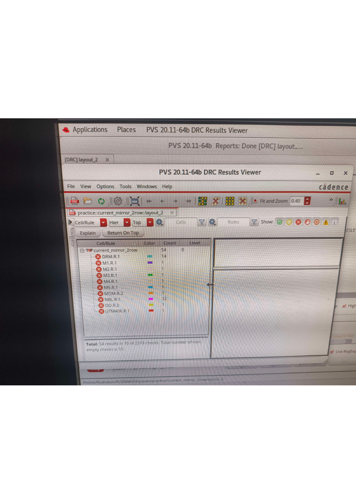
Confidentiality: Process/project details from this academic fabrication work are intentionally not disclosed. Confirm institutional/project permission before making these images public.
5.8-GHz LC-VCO
Cadence Virtuoso · SpectreRFDesigned and simulated a complementary NMOS-PMOS LC-VCO for ISM-band operation using a differential LC resonant tank and PMOS accumulation-mode varactor. Achieved approximately 5.82 GHz resonator validation, −129.7 dBc/Hz phase noise at 1-MHz offset and ~4 mW DC power in pre-layout simulation. Physical layout is DRC/LVS clean; PEX and post-layout RF analysis are ongoing.
Project images can be added here when available.
Cascaded Flyback–Buck DC-DC Converter
24-Hour Hackathon · LTspiceTeam project for AI accelerator power delivery. Personally handled the complete synchronous Buck stage, including power-stage design, component selection, closed-loop feedback, behavioral PWM control and simulation analysis for a 1 V, 100 A output target.
LoRa Fire Detection System
Team Project · ESP32 · SX1278Contributed across sensor interfacing, threshold-based fire/smoke detection, transmitter/receiver firmware integration, hardware integration and system testing. The prototype used 433-MHz LoRa communication and achieved approximately 2 km point-to-point range in an urban test environment.
Certificates & Achievements
Selected credentials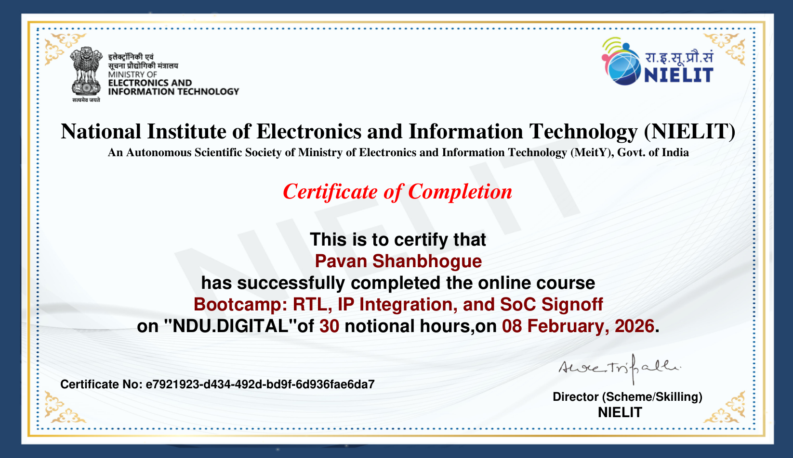
Bootcamp: RTL, IP Integration, and SoC Signoff · 2026
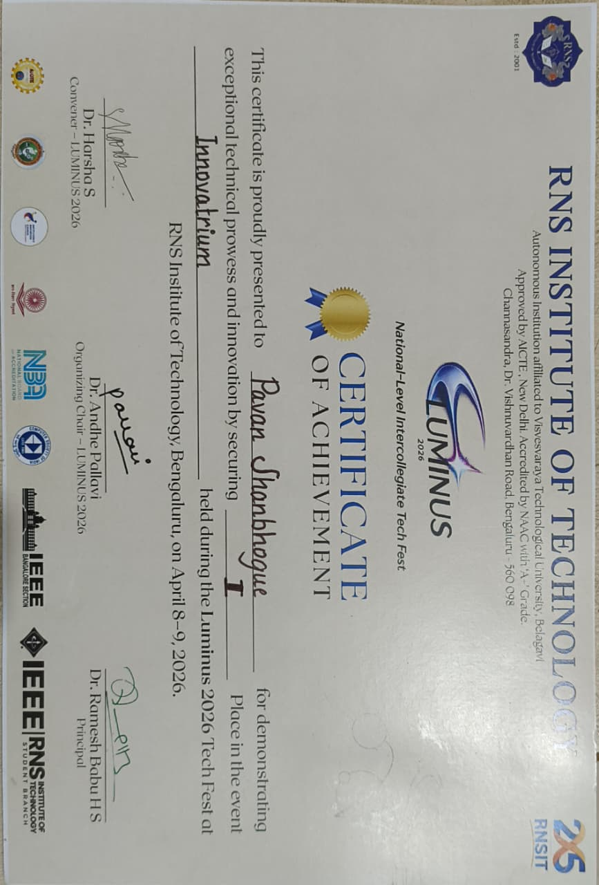
National-level intercollegiate Tech Fest · Technical achievement
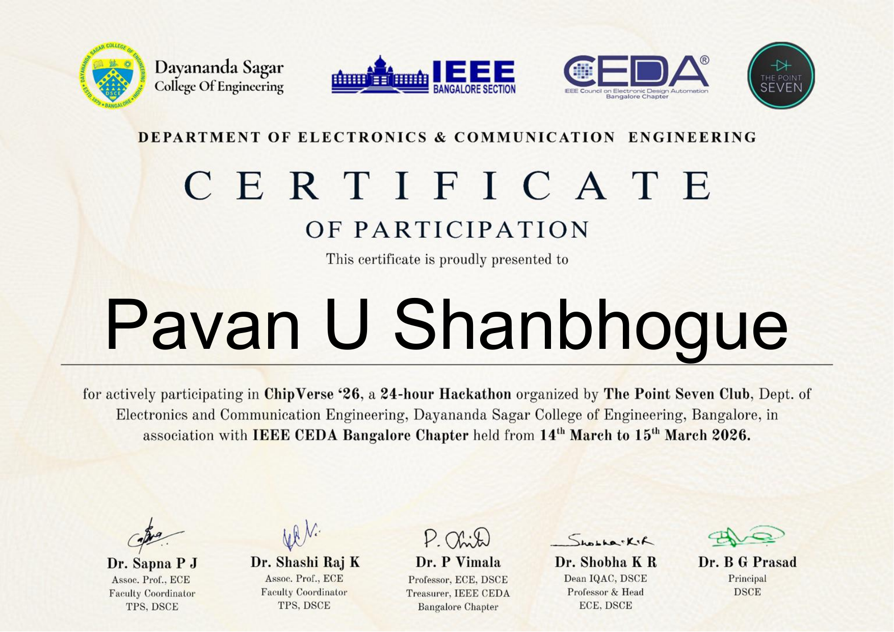
24-hour Hackathon · 2026

Analog and Digital Circuit Design & Simulation · 2023
Core Technical Skills
IC & Layout: Cadence Virtuoso, Custom IC Layout, CMOS, MOSFETs, Common-Centroid, Interdigitation, Dummy Devices, Guard Rings, Metal/Via Routing, DRC, LVS, PEX
Simulation: SpectreRF, PSS, PNoise, S-Parameter Analysis, LTspice, NI Multisim, MATLAB
Embedded/RF: ESP32, SX1278 LoRa, Arduino/C++